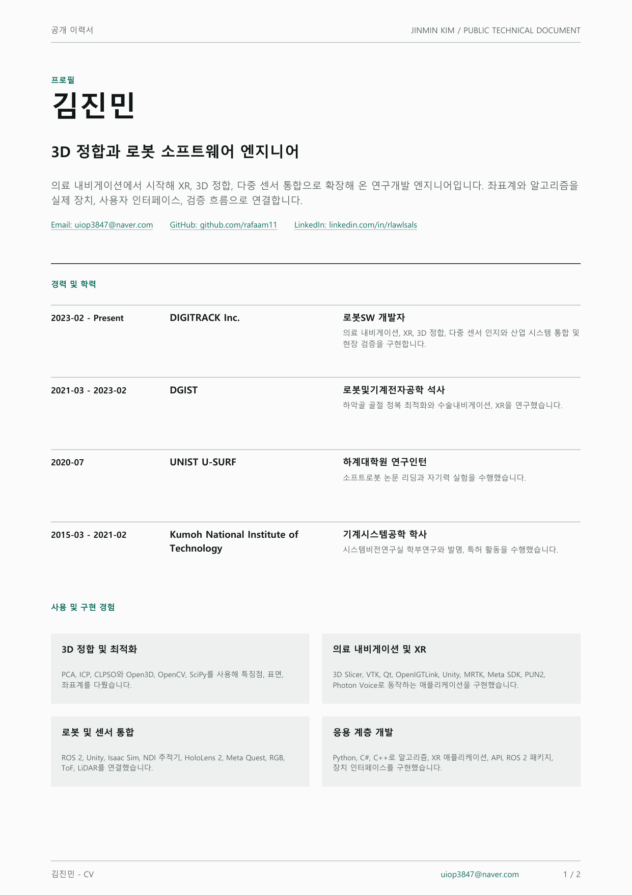
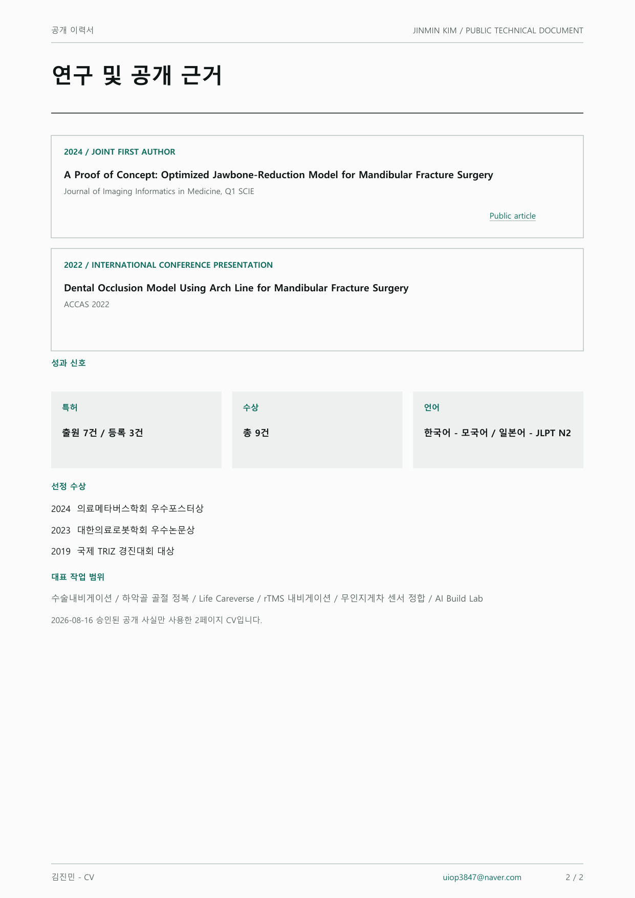

PUBLIC CV · 2026-08-16
3D 정합과 로봇 소프트웨어를 실제 시스템으로 연결합니다.
의료 내비게이션에서 시작해 XR, 3D 정합, 다중 센서 통합으로 확장해 온 연구개발 엔지니어입니다. 아래 2페이지 문서는 승인된 공개 사실과 사용·구현 경험만 담습니다.
CURRICULUM VITAE
공개 이력서


PUBLIC CV · 2026-08-16
의료 내비게이션에서 시작해 XR, 3D 정합, 다중 센서 통합으로 확장해 온 연구개발 엔지니어입니다. 아래 2페이지 문서는 승인된 공개 사실과 사용·구현 경험만 담습니다.
CURRICULUM VITAE

